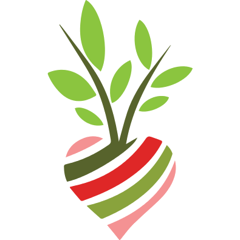

<md-toolbar color="primary">
  <button md-icon-button *ngIf="router.url !== '/'" routerLink="/">
    <md-icon class="md-24">chevron_left</md-icon>
  </button>
  <span class="fill-remaining-space"></span>
  <span>{{title.getTitle()}}</span>
  <span class="fill-remaining-space"></span>
  <span>
    
  </span>
</md-toolbar>
<router-outlet></router-outlet>
